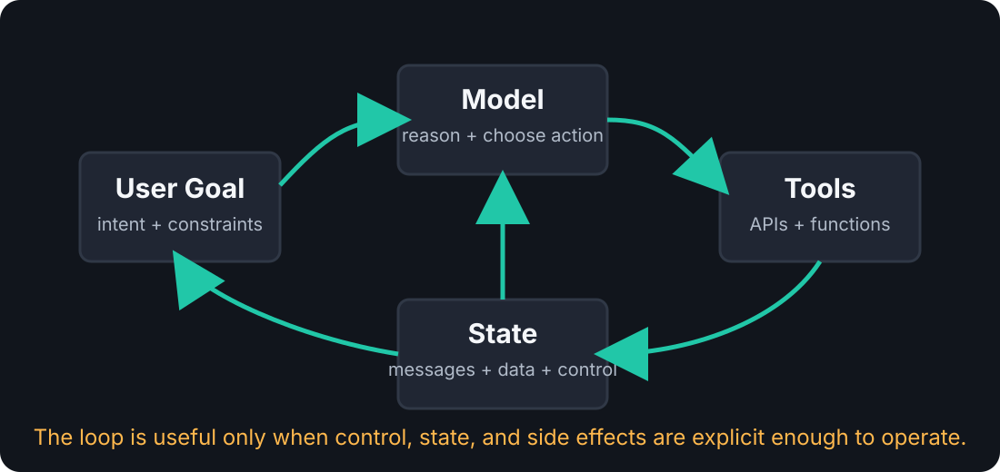
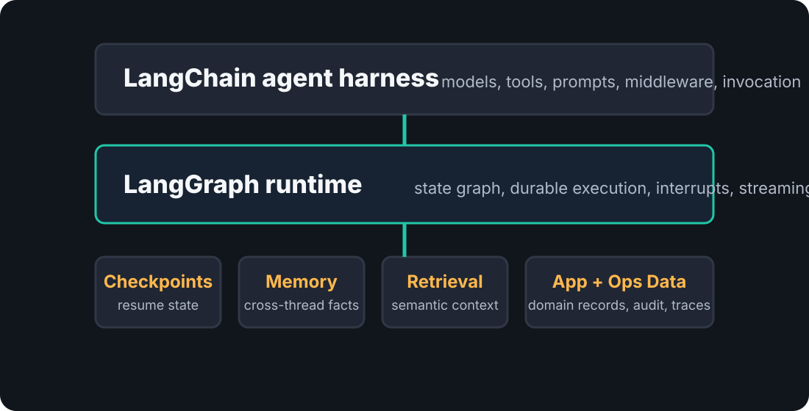
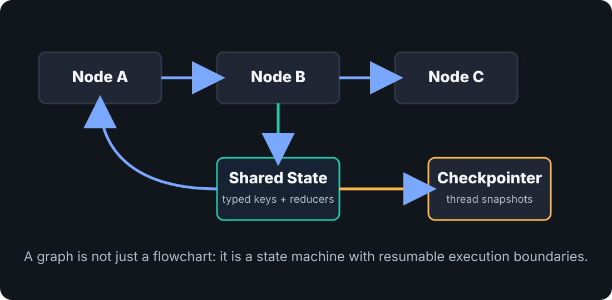
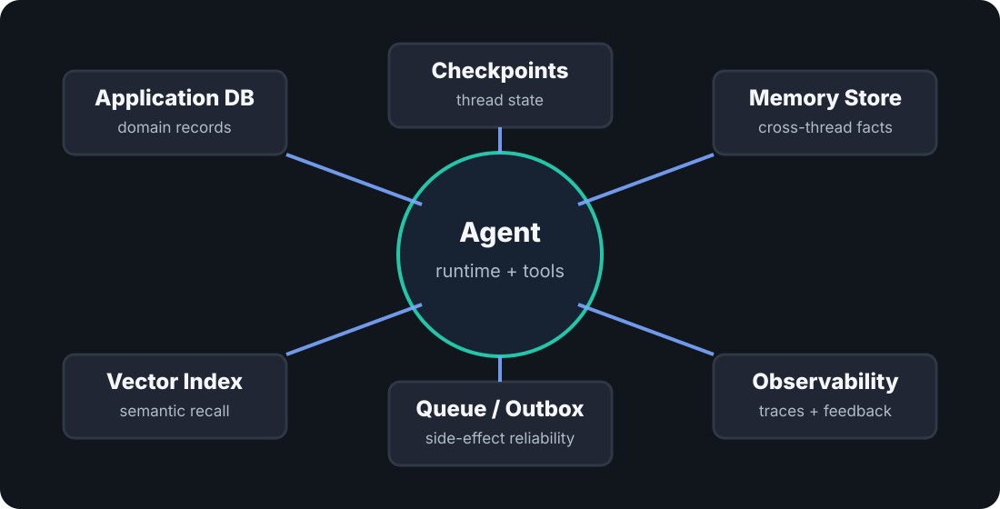

Agent Development
Runtime, state, and databases for developers building production agent systems.
40 minutes / 28 slides
Why this matters
Models interpret goals, choose next actions, and synthesize outcomes.
Tools connect the model loop to APIs, code, search, databases, and side effects.
State, memory, and traces make behavior resumable, debuggable, and improvable.
The hard part is not calling a model. It is controlling the loop around the model.
Learning goals
Explain what LangChain gives you at the agent-harness layer and what LangGraph gives you at the orchestration-runtime layer.
Model agent work as state, nodes, tools, routing decisions, checkpoints, interrupts, and observable runs.
Decide which data belongs in an app database, checkpoint store, memory store, vector index, queue, audit log, or trace system.
Choose when to start with a high-level agent and when to drop into explicit graph design.
Mental model

Stack

LangChain
Common model, message, tool, output, middleware, and invocation patterns.
Bind tools, prompts, structured output, context, and middleware without building a runtime from scratch.
Integrations with models, retrievers, tooling, observability, and deployment paths.
In current docs, LangChain agents are recommended as a higher-level starting point for common model and tool-calling loops.
LangChain example
from langchain.agents import create_agent
from langgraph.checkpoint.memory import InMemorySaver
def lookup_order(order_id: str) -> dict:
"""Return order status from the application system."""
return {"order_id": order_id, "status": "waiting_on_carrier"}
agent = create_agent(
model="provider:model-name",
tools=[lookup_order],
system_prompt="Help support staff answer order questions accurately.",
checkpointer=InMemorySaver(),
)
result = agent.invoke(
{"messages": [{"role": "user", "content": "Why is order A-123 delayed?"}]},
config={"configurable": {"thread_id": "support-ticket-42"}},
)The model string is provider-specific. The durable behavior comes from the checkpointer and thread id, not from the prompt.
Harness responsibilities
| Concern | Why it matters | Common failure if ignored |
|---|---|---|
| Tool schema | Turns code capabilities into model-callable affordances. | The model calls the wrong thing with plausible arguments. |
| Context | Separates per-run facts from durable conversation state. | Credentials, tenant ids, or feature flags leak into messages. |
| Middleware | Adds retries, guardrails, summarization, human approval, or custom routing. | Every tool and model call gets bespoke infrastructure code. |
Use LangChain when
LangGraph
Typed data carried through the workflow and updated by nodes.
Edges and commands make routing explicit instead of buried in prose.
Checkpoints allow resume, human review, time travel, and recovery.
LangGraph is valuable when the control plane is part of the product.
State flow

LangGraph example
from typing import Literal, TypedDict
from langgraph.graph import END, START, StateGraph
class TicketState(TypedDict):
ticket_id: str
category: str | None
risk: Literal["low", "high"] | None
draft: str | None
def classify(state: TicketState) -> dict:
return {"category": "billing", "risk": "high"}
def draft_reply(state: TicketState) -> dict:
return {"draft": "I found the billing issue and need approval to proceed."}
builder = StateGraph(TicketState)
builder.add_node("classify", classify)
builder.add_node("draft_reply", draft_reply)
builder.add_edge(START, "classify")
builder.add_edge("classify", "draft_reply")
builder.add_edge("draft_reply", END)
graph = builder.compile()Node design
Hard to resume, inspect, retry, or explain. Failures force repeated work.
A node owns one meaningful unit of state change or side-effect preparation.
Excess checkpoints, noisy traces, and control flow that obscures intent.
Node boundaries become natural places for checkpoints, traces, retries, and human review.
Durable execution
| Mode | Tradeoff | Use when |
|---|---|---|
exit |
Lowest write overhead, weakest mid-run crash recovery. | The workflow is long-running but intermediate loss is acceptable. |
async |
Good throughput with a small crash window. | Most production agent flows where latency matters. |
sync |
Strongest checkpoint guarantee, highest overhead. | Critical steps where redoing work or losing state is expensive. |
Human in the loop
Approval becomes an external queue, a custom pause table, and brittle glue to reconstruct what the agent was doing.
The workflow can pause with state saved, wait for approval or edits, then resume from the same logical point.
from langgraph.types import interrupt
def request_approval(state: TicketState) -> dict:
decision = interrupt({"draft": state["draft"], "risk": state["risk"]})
return {"approved": decision["approved"]}Database map

Application data
Checkpoints
Thread id, checkpoint id, state snapshot, metadata, and pending writes.
Resume failed runs, inspect state history, pause for humans, and replay decisions.
Start in memory or SQLite locally. Move to a durable database for production.
Memory
| Type | Primary key | Purpose | Risk |
|---|---|---|---|
| Short-term | Thread | Conversation continuity and current task state. | Context growth, stale assumptions, privacy retention. |
| Long-term | User, org, app namespace | Reusable preferences, facts, summaries, and learned constraints. | Incorrect memories become product behavior. |
Retrieval
Embeddings make unstructured content searchable by semantic similarity.
Ranking, filters, recency, permissions, and chunk strategy decide usefulness.
The model receives selected context and must still reason about applicability.
Treat retrieval as evidence injection. Treat memory as state the product is willing to carry forward.
Side effects
Model loops can retry. Tools can timeout. Users can approve hours later. External APIs can partially succeed.
Record intended side effects transactionally, process them idempotently, and report the durable outcome back into graph state.
This is normal distributed-systems hygiene. Agents make it more visible.
Observability
One user operation or agent turn.
One model call, tool call, parser, retriever, or node.
Version, tenant, experiment, feature flag, or route.
Human or automated signal for improvement.
For agents, observability is product telemetry and debugging surface.
Production shape
Design playbook
| If the product promises... | You need... |
|---|---|
| "Come back later and continue." | Thread ids, checkpointer, retention policy, state inspection. |
| "Ask for approval before changing data." | Interrupts, human review UI, durable pause, auditable decision. |
| "Learn my preferences." | Memory write policy, namespace design, correction and deletion paths. |
| "Use our knowledge base." | Retriever, permissions, chunking, freshness, citations, evaluation. |
Failure modes
The only record of progress is a growing message list.
The model can reach capabilities wider than the product contract.
Bad summaries or inferred preferences become durable behavior.
A timeout causes duplicate emails, tickets, payments, or writes.
You cannot answer why the agent selected a tool or changed state.
Failures are anecdotes instead of labeled data for improvement.
Decision framework
Use this when you need a fast, configurable harness for model calls, tools, structured output, middleware, context, and common agent loops.
Use this when state transitions, human review, durability, branching, replay, or operational boundaries must be explicit.
The split is not beginner versus advanced. It is harness versus runtime.
Recap
References